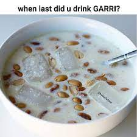

soaked garri

Ingredients
- Water
- Sugar
- Garri grain
- Peanut
- kuli-kuli
- milk
- coconut
- ice block
- groundnut
Steps involved
- Get some quantity of garri in a cup
- add Water and stir
- decant dirts floating
- add all Ingredients
- add little water to your taste
- stir at angle 45 and you are good to go
Home